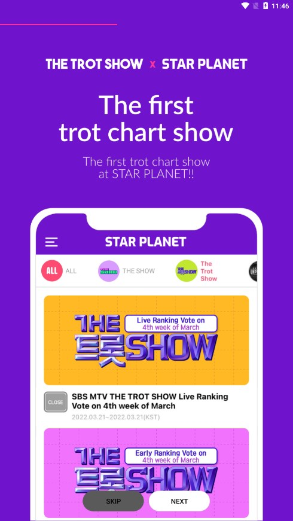

STAR PLANET 深度盘点：从投票到演唱会门票，这套粉丝平台能帮你做多少事
STAR PLANET 不只是一个给偶像投票的 App——它内置了全球手机票务系统、两套独立的果冻经济体系，以及开放的艺人社区。本文从五个能力域出发，系统性梳理它的完整能力面和使用场景。
如果你追的是 K-pop 偶像或者 THE TROT SHOW 这种韩国选秀节目，大概率已经听过 STAR PLANET，它的官网上最显眼的标签是「粉丝投票平台」——每周一晚 THE TROT SHOW 的实时投票、每月 Star Ranking 的人气排名，这些都是 STAR PLANET 的主战场。但把它限定在「投票工具」未免太小看了。实际打开用一个月你会发现，它已经把粉丝应援所需的几个核心场景全部塞了进来：从攒票、投票、抢演唱会门票，到逛社区、看艺人动态，甚至连第三方便利店式的任务墙都集成了两套。
这篇盘点就按能力域铺开，不凑数、不重复，哪些好用、哪些坑多、适合什么人，一次说清楚。
能力域一：果冻经济——两套货币、两条攒取路径
STAR PLANET 的经济系统是它所有功能的底层支撑，搞不懂两套果冻的区别，后面的投票和票务都会踩坑。
核心货币有两种：Heart Jelly 和 Star Jelly。Heart Jelly 是消耗品，每月 16 日清零，主要用来投票（预投票 10 Heart Jelly / 票，实时投票 100 Heart Jelly / 票）；Star Jelly 是硬通货，不会过期，主要用来在商城买周边，也能按 2:1 的比例兑换 Heart Jelly（250 Star Jelly → 500 Heart Jelly）。这个兑换比例很重要，等于告诉你 Star Jelly 永远是 Heart Jelly 的两倍价值，不到万不得已别乱兑。
攒 Heart Jelly 的路径分两种：日常免费和任务墙。日常路径是每天刷 5 支广告 + 一次刮刮卡，大约能攒 70~120 Heart Jelly，稳定但效率低。任务墙是高收益但不稳定的来源——STAR PLANET 接入了 Buzzvil（韩国本土为主）和 Tapoy（国际用户为主）两个第三方任务平台，任务类型包括下载 App、填问卷、看长视频，奖励从 5 到 200 Heart Jelly 不等。但任务墙有个通病：经常显示「没有可用任务」。原因有三：地区限制（Buzzvil 上大量韩国本土任务国内 IP 看不到）、时段限制（新任务多在晚上 20:00-24:00 上架）、用户画像（任务平台根据你的年龄、性别、设备特征推任务，不符合画像就整屏空）。
攒票的节奏策略直接决定了 Heart Jelly 会不会被清零浪费，STAR PLANET文档里有完整的典型周期时间轴可以参考。THE TROT SHOW 每周一晚直播预投票 + 实时投票，Heart Jelly 每月 16 日凌晨清零——这两个时间点大致对齐，意味着你必须在一次清零之后、下一次节目直播之前的完整周期内攒完投完。直播前一周开始刷，7 天大概能攒 700 Heart Jelly，够投 5 票实时还剩 200 投预投。如果当期本命只上预投票不冲实时，完全没必要刷任务墙，日常广告和刮刮卡就够。

能力域二：票务系统——粉丝专属的手机电子票
这是 STAR PLANET 区别于其他应援 App 的核心差异化功能。它是全球首个粉丝平台内置的手机电子票系统，覆盖四类场景：THE TROT SHOW 直播观演申请（免费但要抽选）、商业演唱会正规购票、粉丝见面会（FM）以及平台不定期推出的线下活动。
和 Interpark、Melon Ticket 等专业票务平台相比，STAR PLANET 的票务是粉丝专属通道——有些场次会提前对粉丝开放，或者给绑定了对应 MY STAR 的账号预留一定数量的票。但热门演唱会的票不管在哪个平台都是秒没，STAR PLANET 也不例外，需要提前定好闹钟、网络准备好。买好的票存在手机里当电子票用，进场扫二维码或条形码即可，不需要打印纸质票。部分场次支持转赠，抢多了或临时去不了可以转给朋友。
有一点需要明确：票务和投票是两个独立系统。票务不消耗 Heart Jelly，走 App 内支付（Android 绑定 Google Play Billing 的信用卡，iOS 走 Apple Pay），用真金白银买。
能力域三：社区——不封闭的艺人分区
不少粉丝平台把社区做成了本命的信息茧房——绑定 MY STAR 之后，feed 里刷不到别家的动态。STAR PLANET 不是这样。它的社区是开放的，所有艺人的分区都能随便逛。
为什么要逛其他艺人的社区？实际场景大概是这几种：THE TROT SHOW 当期想看竞争对手的人气动态、发现另一个喜欢的艺人在 STAR PLANET 上有活动、或者纯粹学习一下别家粉丝怎么搞应援、怎么攒果冻。切换分区有三种方法：社区页顶部的艺人头像标签栏（最方便，点头像直接切）、本命 feed 里提到的其他艺人名字或头像跳转、以及首页搜索框搜艺人名字后进主页。
逛别家社区的时候有个容易踩的坑：你可以给那个艺人投票，但 Heart Jelly 会正常消耗，而且投出去同样不能撤回。如果只是随便逛一下不小心点了别家的投票按钮，那 Heart Jelly 就没了——投票前一定要看清楚卡片上的艺人名字。
能力域四：THE TROT SHOW 投票——节目本身就是最大场景
STAR PLANET 和 THE TROT SHOW 的绑定关系是它所有功能的最大场景锚点。每周一晚直播，分预投票和实时投票两轮：预投票提前 4 天开放，不限次数，10 Heart Jelly / 票；实时投票在直播进行中，100 Heart Jelly / 票，通常只有前三名候选能拿到实时投票资格。
投票策略上，实时投票因为单价高，建议集中火力投本命，别分散。预投票可以多投几张，帮本命在榜单上排到能进实时的位置。但这里有个关键判断：预投票名单出来先查本命有没有进前几名，如果没进，就没必要专门攒 500 Heart Jelly 冲实时了——实时投票只给前三名候选开放，白攒的果冻只会被 16 日清零。
短板也要说
盘点到这里，STAR PLANET 的能力面已经覆盖了应援的主要场景，但有几个硬伤是必须提的。
第一，Heart Jelly 的清零机制本身就是反人性设计——每月 16 日全清，不管你攒了多少。这逼着粉丝必须卡准周期攒、卡准节点投，稍有不慎就白攒一周甚至两周。第二，任务墙的不稳定是持续性问题，不是偶尔刷新就能解决的。地区限制和用户画像是结构性的，Tapoy 比 Buzzvil 好一点但也好不到哪去，指望靠任务墙攒票的人大概率会失望。第三，对于 Android 用户来说，STAR PLANET下载之后绑定 Google Play Billing 又是一个门槛——国内手机号注册不了账号，海外支付渠道也不是人人都有，票务功能等于半残，抢演唱会票基本只能走海外渠道。
什么样的人该用它
盘点下来，STAR PLANET 不是给所有人用的工具。画像比较清晰：
追 THE TROT SHOW 或固定本命的重度应援者——每周投票、每月冲榜、偶尔还要抢演唱会门票，这部分人会把 STAR PLANET 的所有功能用起来，果冻的节奏策略也必须研究透。
喜欢逛社区、对多家艺人都感兴趣的泛粉——开放的艺人分区让他们能在一个 App 里同时关注多家动态，不用下载好几个应援 App。
在韩国或有海外支付能力的用户——票务功能对 Android 用户的 Google Play 绑定有硬门槛，iOS 用户的 Apple Pay 相对友好；在韩国的用户则没有这个问题。
如果你只是偶尔帮本命投两票、不逛社区也不抢票，那 STAR PLANET 对你来说只是个投票工具，用不着研究果冻经济的细节——但如果你想把它用透，上面五个能力域一个都绕不开。
关于这套资料的备份，GitHub、Gitee、GitCode 三个仓库都能拿到完整版本，选哪个看你所在的地区访问哪个更顺畅就行。